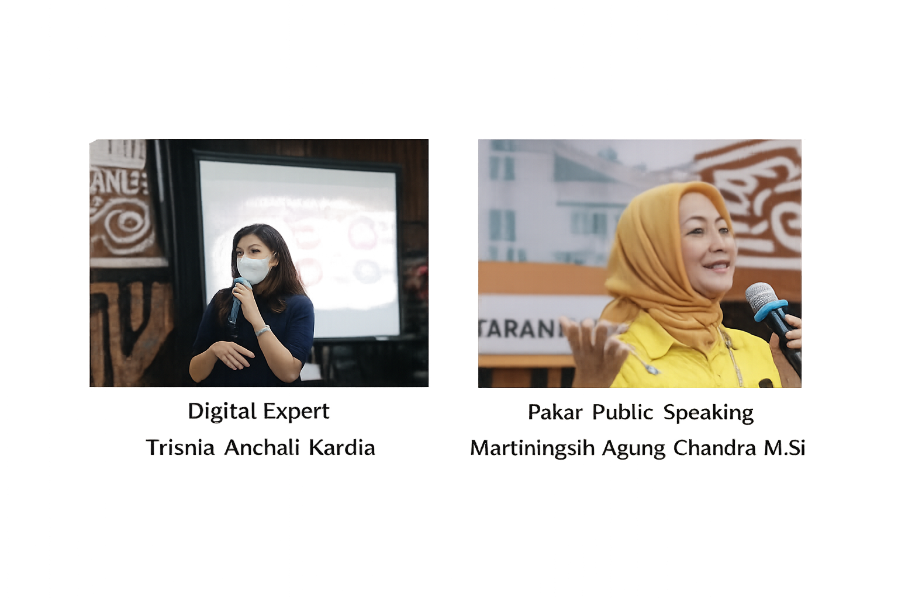
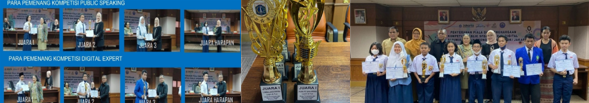
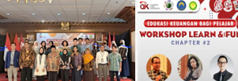
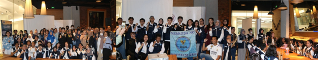
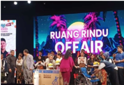

Program edukasi dan pengembangan generasi muda melalui workshop, seminar, dan kegiatan positif.

12 November 2022-Kota Tua LEARN: Workshop tentang pentingnya Public Speaking bagi pelajar FUN: Bermain angklung dan wisata kota tua Dukungan: BNN, Disparekraf DKI, MULA Kota Tua, PATA chapter Indonesia, aplikasi LINE, PPGJ Chapter #1 ini meskipun perdana tapi GEMAR mengadakan kompetisi dan mengeluarkan sertifikat yang ditanda-tangani Disparekraf DKI bisa dijadikan lampiran untuk jalur prestasi. Workshop GEMAR Learn & Fun chapter#1 mendatangkan para pembicara profesional dengan taraf Internasional, yaitu: Martiningsih Agung Chandra M.Si Dosen Senior London School dan Sekjen PATA Indonesia Trisnia Anchali Kardia Digital Expert, COO aplikasi LINE

13 Desember 2022 GEMAR bekerjasama dengan Dinas Pariwisata DKI mengadakan kompetisi setelah kegiatan LEARN & FUN Chapter#4 dan pemenang mendapat sertifikat

15 April 2023 Pembicara : Bambang S. Antariksawan (Kepala Bidang Edukasi & Literasi OJK) Deasy Helena (Pemimpin redaksi TRAINsetter, penulis, konseptor media & event) Salim Sutiono (Certified Financial Planner) Didukung oleh: OJK, BI, Yayasan Global Persada Mandiri, KFC, Holland Bakery Setiap peserta mendapat sertifikat dari OJK

Bekerjasama dengan BNN, Dispar, Consina, Ultima II, Allobank, IIDI

29 November 2024 Kegiatan sosial, GEMAR bekerjasama dengan RUANG RINDU RRI melalui charity concert bagi penyandang disabilitas dengan penyanyi Ita Purnamasari, Dewi Yull, Yana Yuljo dan penyanyi muda dari ajang pencarian bakat RRI. Kepedulian GEMAR pada penyandang disabilitas dengan memberikan donasi berupa 3 paket alat bantu (kursi roda ekslusif, tongkat lipat, alat bantu dengar, tabung oxygen, alat cek darah kolesterol & diabetes) Uang tunai sebesar Rp 23.550.000,-untuk 3 Yayasan disabilitas melalui LAQITA (Ibu Dita) ke RRI Uang tunai sebesar Rp 1.000.000,-ke 2 pelajar tuna netra (Michele & Noel) diberikan langsung setelah acara. Uang tunai sebesar Rp 1.500.000,- (uang pembinaan & transportasi) ke paduan suara pelajar. diberikan langsung setelah acara,